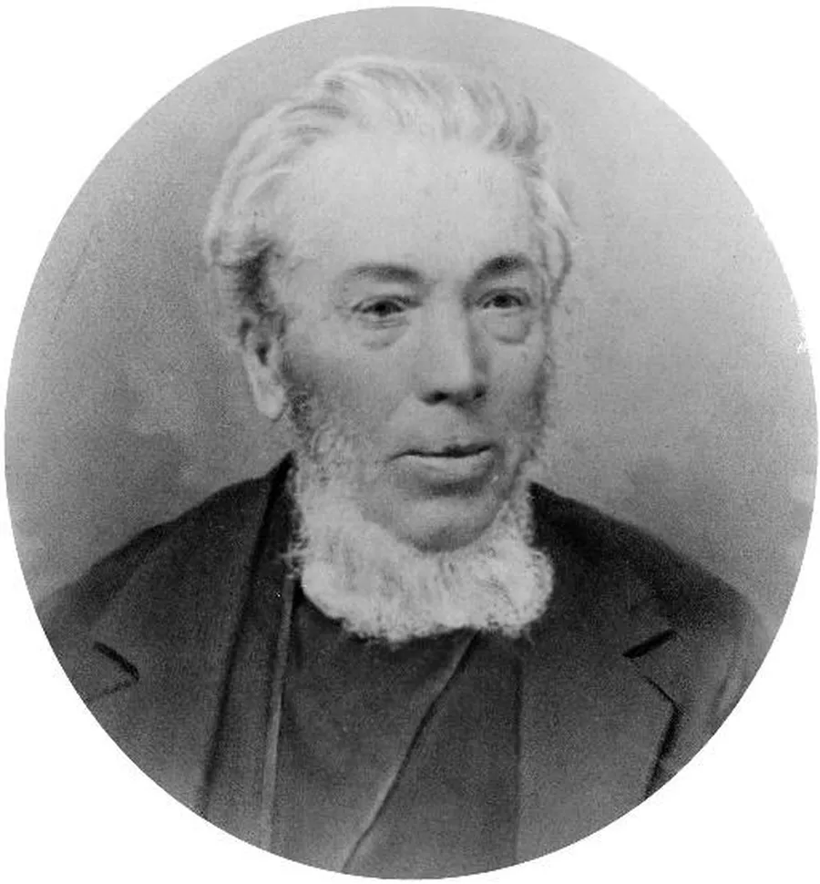
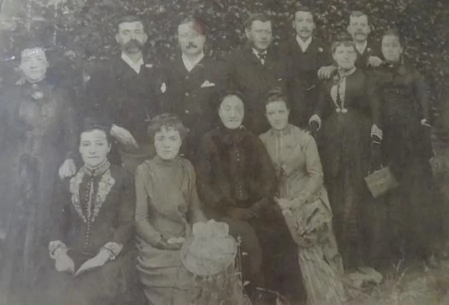
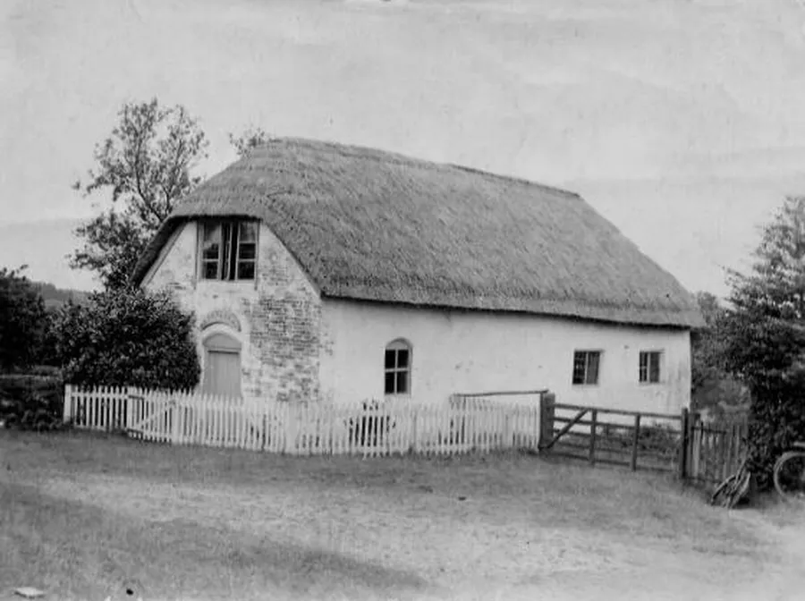
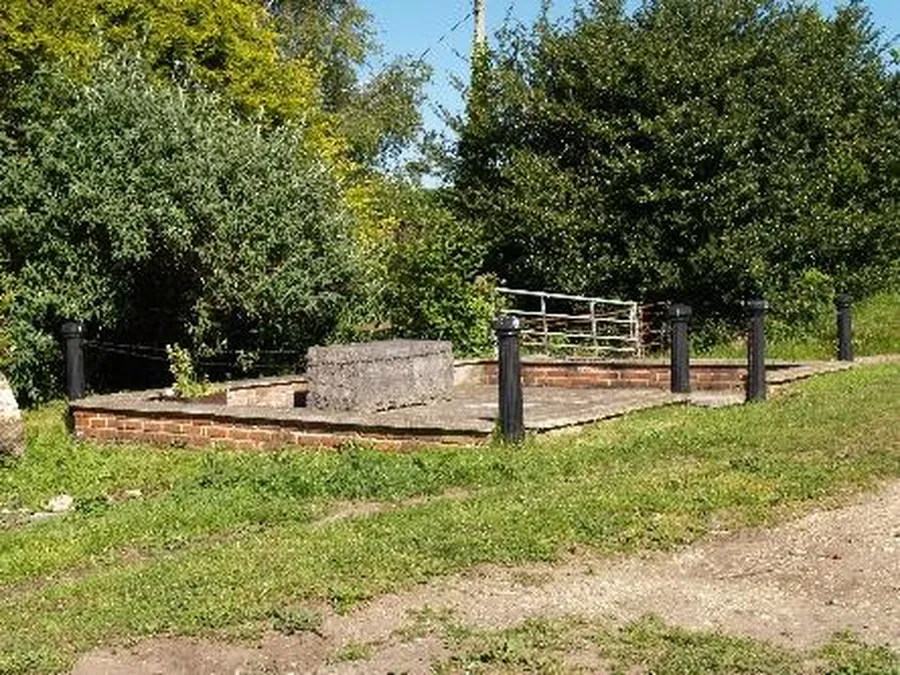
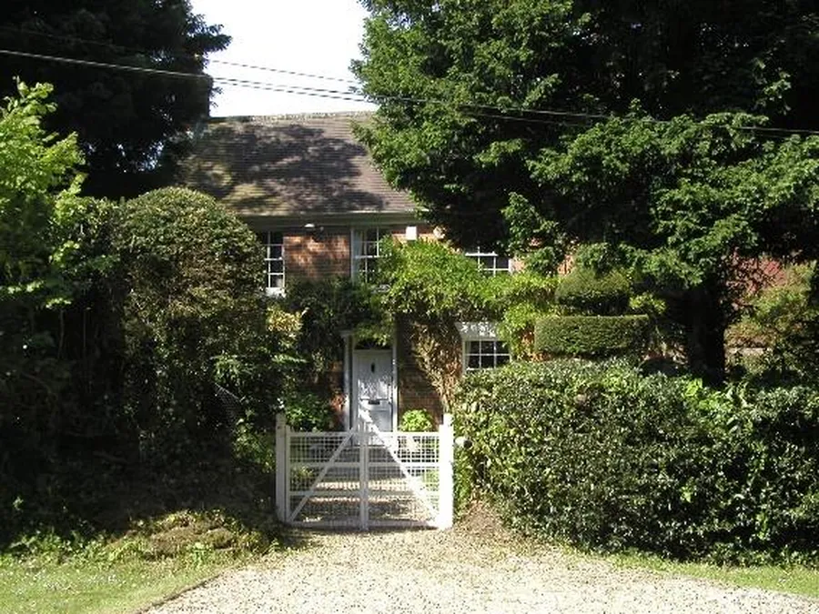
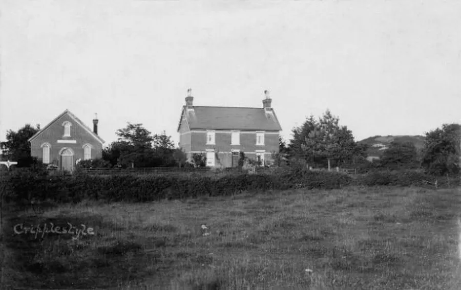
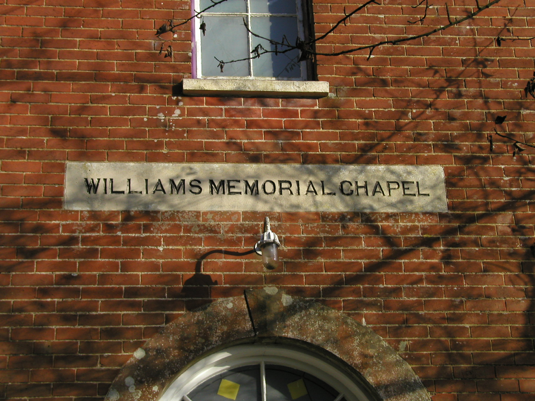
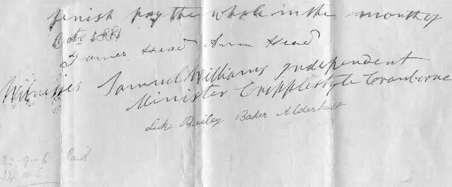

The Rev. Samuel Williams (1808 – 82)
by Adrian King

Travelling from Alderholt to Cranborne and just before the Verwood turning you will pass a chapel at Cripplestyle. If you take the advice of the signpost and travel down the lane by the side of it to Cripplestyle Only you will eventually reach a memorial garden where the tarmac becomes mud. This was the site of Ebenezer the old chapel where Samuel Williams was pastor for forty-two years.
When he arrived at Cripplestyle the thirty-two-year-old student from Penywaun in Brecon must have wondered how he had allowed himself to get into this situation. He had only come to Cripplestyle to preach on probation — having spent a year with the Reverend Thomas Evans from Shaftesbury to familiarize himself with the English language.

It was June 1840 and Samuel Williams had recently travelled the twenty-five miles over the Chase to this isolated community on the edge of the Dorset Heathland. The congregation could not be faulted. They were poor by the world’s standards but rich in God’s love. They had built their chapel from mud and thatch with their own hands thirty-three years previously. They called it Ebenezer ‘Hitherto hath the Lord helped us’ such was their love for Bible truths. Their pastor William Bailey had been dead two years.
Mr. Williams came for three months and did not originally intend "prolonging his residence in that isolated spot" for longer than he could help yet he remained as pastor there for forty-two years. He was ordained in 1842 by Dr. Condor from Poole.
Not long after he took up the pastorate, he married Sarah Fry (1826 – 1912) a local girl and they had eleven children.
- Thomas (1843)
- Elizabeth (1845)
- Henry (1847)
- John (1850)
- Susannah (1852)
- Morgan (1857)
- Ann (1859)
- Jane (1861)
- Arthur (1865)
- Mary (1868)
- Sophie (1871)

Due to their circumstances the people were not able to support the pastor fully but the Home Missionary Society and the County Association gave substantial help. Samuel Williams had a social ministry. His love was for his flock ensuring that they were fed and educated both physically and spiritually.
In 1844 a schoolroom was built in which there was a day school and another room was added to this in 1861. Samuel collected financial support for a teacher right up to the time of his death. A story is told that whilst collecting support he was riding through a sunken track on the heath and he got stuck whilst his horse went from under him leaving him suspended. In 1858 he held classes in Cranborne. The notice announced that ‘A certain proportion of time will be devoted to the Holy Scriptures’.

He also had an itinerant preaching ministry. Walking seventeen miles to Salisbury to preach and returning that same day was a regular occurrence. He also had calls to other churches that were able to pay a greater stipend than he was receiving but accepting them never seemed right.
He never quite settled with his second language. There was a time at college when he found that there were not enough words in that “Dreadful English language” as he called it. He had been struggling with the sermon from the start but he "Could contain himself no longer, bursting forth with poetic eloquence and feeling in his native tongue concluding in vigorous and stirring Welsh the sermon which he had so anxiously begun in English."
In the early years of his ministry he conducted an evening service at Cranborne but this was discontinued when a chapel was purchased at Damerham. He went there twice a week to conduct a Bible class and service and ensured that the pulpit was supplied on a Sunday.

The 'Established Church' never got on well with the non-conformists in the area. On one occasion a meeting was arranged for the Dissenters of the district. The local vicar fearing trouble arranged for two constables to be present. Samuel had been asked to pray and he confined his prayer "To asking God’s blessing on the vicar and upon his spiritual needs as he went in and out among his parishioners."
Rev. Williams announced his retirement in 1881 but died on 26th March 1882. Too early to be able to take up residence in the small cottage that the Marquis of Salisbury — then the prime minister — had built for him in the grounds of the manse at Hither Daggons. He is buried in Alderholt St. James Churchyard.
A new chapel and manse were built in 1888 and named in memory of Samuel Williams.

The old chapel continued to be used for many years but in 1976 it collapsed after a summer of drought and an autumn of torrential rain. A memorial garden with plaque was opened in 1978. This was replaced with a more substantial stone in 2001.
I was brought up at Cripplestyle where my 'aunties' and 'uncles' could still remember the younger children of Samuel and Sarah Williams. Sarah Williams ran a shop in the old part of the house at Hither Daggons were she extended credit to her poorer customers. Susannah was a Sunday school teacher for many years.

But times change and people move on. In 2000 with an aging congregation and only a few members the Williams Memorial Chapel at Cripplestyle closed its doors and joined with the Chapel at Alderholt.

It was used for several years but eventually sold. The Williams Memorial sign is now covered by a different inscription!
